№ 01 · Two minimal deer that instantly make a mantel look intentional.
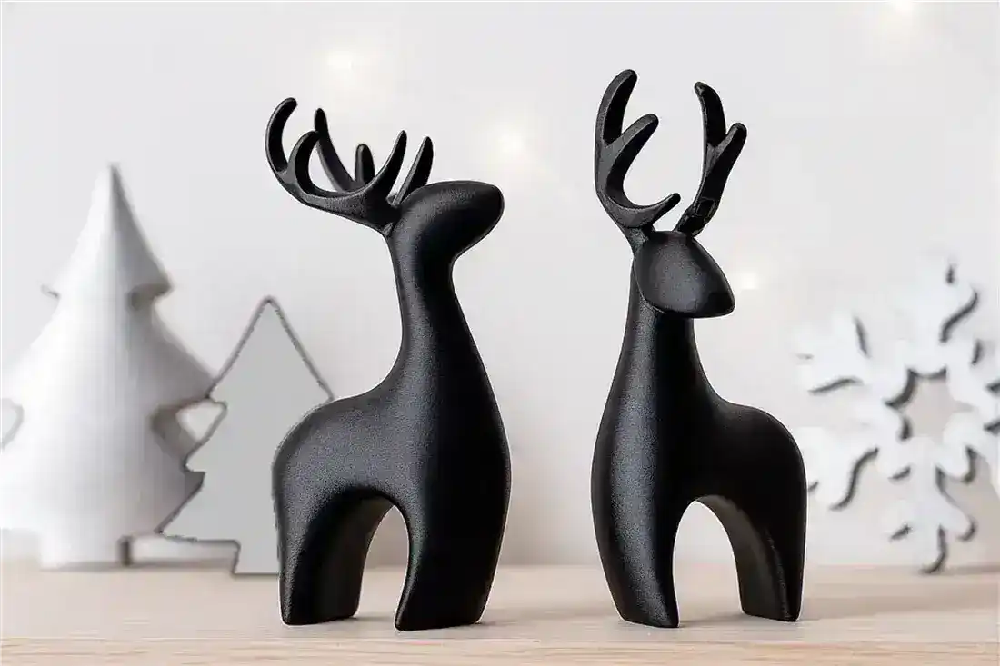
01
3D Model
Christmas & Winter · 3D Model
A clean, low-poly pair of reindeer brings a calm Scandinavian feel to any mantel or shelf. Print them in matte white, walnut brown, or a glossy metallic to match your holiday palette.
№ 02 · Prints in one sitting and needs zero post-processing.
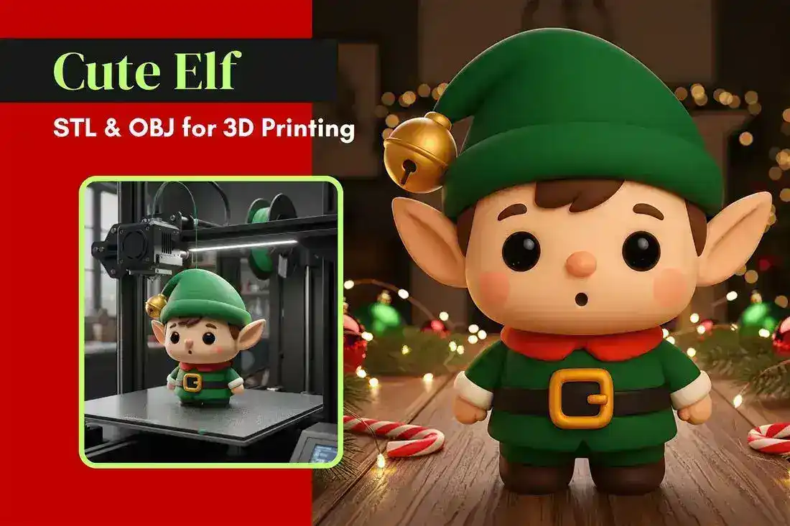
02
3D Model
Christmas & Winter · 3D Model
This pint-sized elf has a beaming grin and a hat that flops just right for a playful shelf accent. It is a quick single-color print that looks great beside a stack of wrapped gifts.
№ 03 · Drop a tea light inside and the room changes mood instantly.
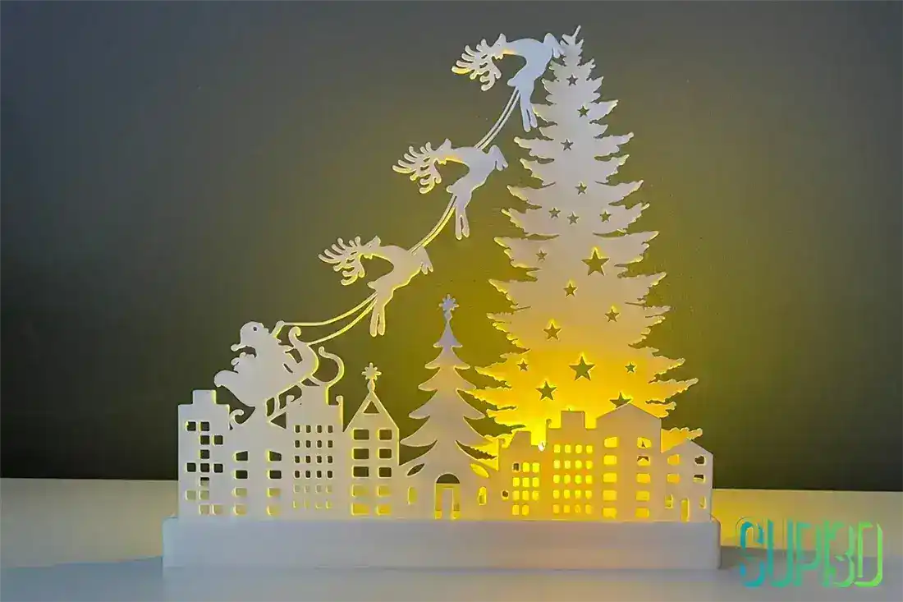
03
3D Model
Christmas & Winter · 3D Model
A layered reindeer silhouette catches warm LED glow like a tiny winter skyline on your desk. Drop in a tea light or small bulb and the cutouts throw soft festive patterns across the wall.
№ 04 · A proper nutcracker for the entryway — bold, symmetrical, classic.
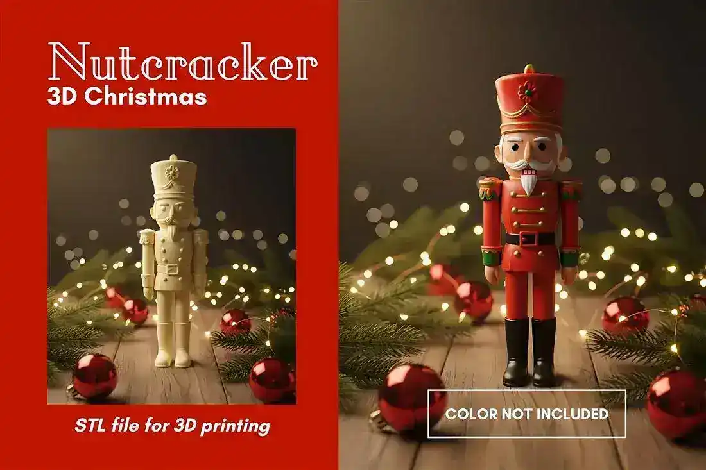
04
3D Model
Christmas & Winter · 3D Model
A stately nutcracker soldier ready to line your entryway or sideboard this season. The detailed uniform reads beautifully in a single bold color with a few hand-painted highlights.
№ 05 · Layered scenes glow best when the room around them is dark.
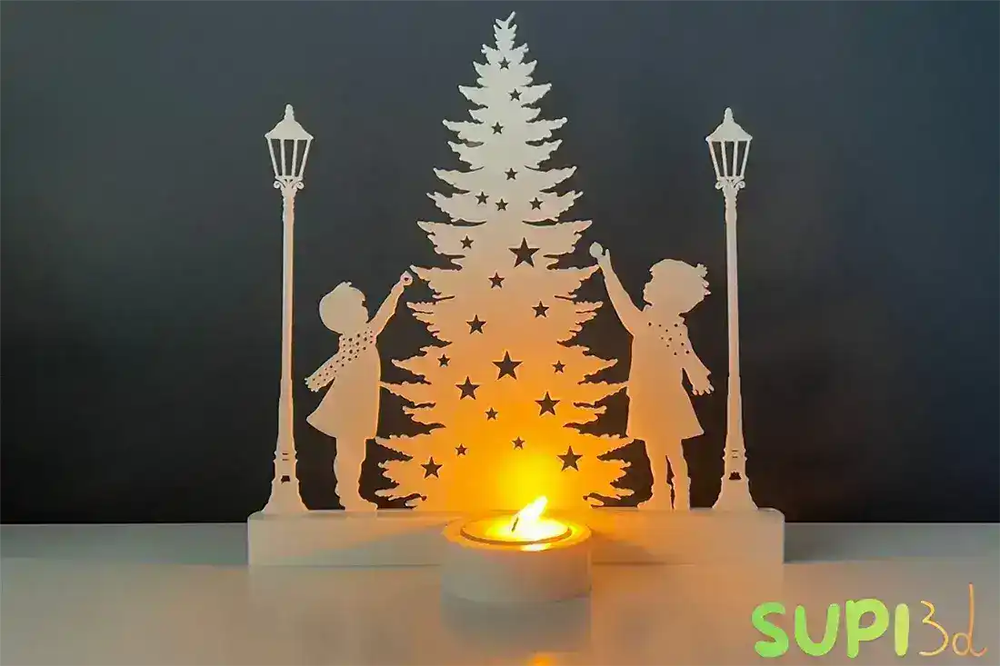
05
3D Model
Christmas & Winter · 3D Model
Stacked snowy scenes nest inside this light stand for a diorama that glows from within. It is a lovely centerpiece for a console table through the whole winter.
№ 06 · Block letters print flat, stack fast, and style anywhere.
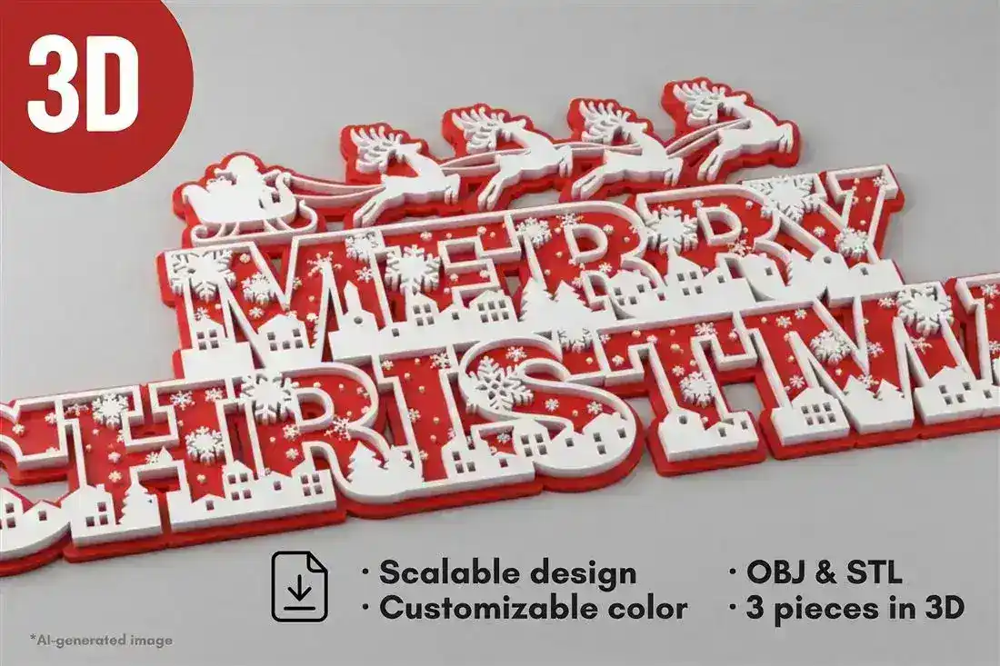
06
3D Model
Christmas & Winter · 3D Model
Chunky three-dimensional letters spell out the season's greeting for a shelf or photo backdrop. Hang them, lean them, or scatter them with pine sprigs for an easy festive vignette.
№ 07 · Feathers are the hard part — and here they print cleanly.
07
3D Model
Christmas & Winter · 3D Model
Delicate feathered wings cradle a single taper for a serene, heavenly glow. It makes a quiet statement on a dinner table or bedside through the holidays.
№ 08 · A tiny choir you can finish in an evening.
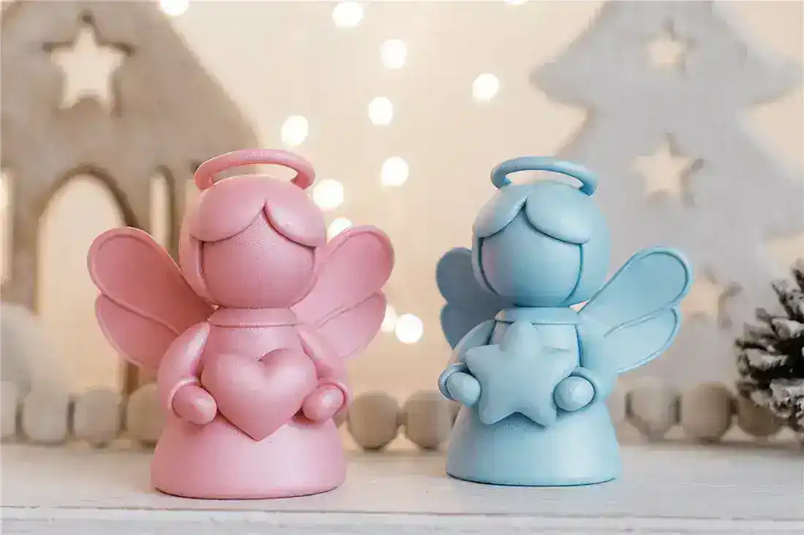
08
3D Model
Christmas & Winter · 3D Model
A small chorus of round-cheeked angels adds sweetness to any nativity or shelf display. They print fast and look charming painted in soft pastels.
№ 09 · Light catches the smooth curves beautifully on the tree.
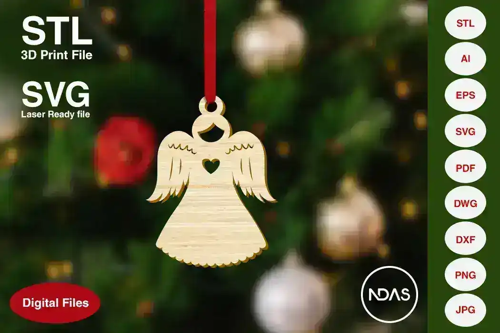
09
3D Model
Christmas & Winter · 3D Model
A gentle angel topper-style ornament that hangs or crowns your tree with calm. The smooth geometry catches light nicely in resin or matte PLA.
№ 10 · Windowsills were made for a row of these.
10
3D Model
Christmas & Winter · 3D Model
A serene angel form holds a tea light for a warm, meditative flicker. Place a few along a windowsill to greet the long winter evenings.
№ 11 · Three poses, one herd — arrange and rearrange endlessly.
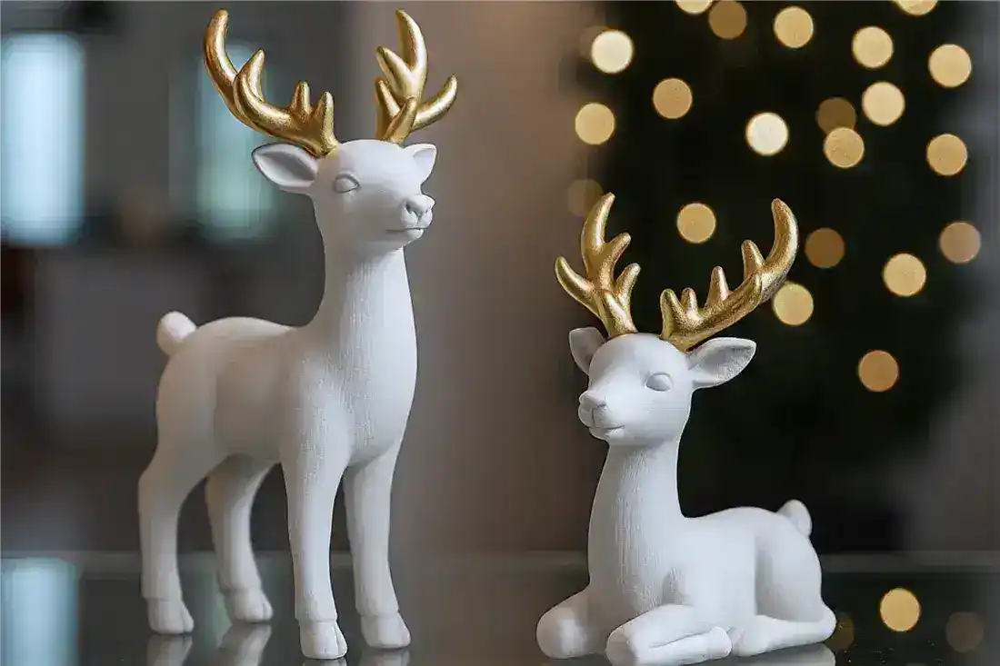
11
3D Model
Christmas & Winter · 3D Model
A little herd of reindeer that arranges into a sweet winter tableau on any surface. Mix poses and colors to build your own tiny woodland scene.
№ 12 · The forest silhouette earns its keep once the lights go down.
12
3D Model
Christmas & Winter · 3D Model
Layered pines and a watchful reindeer come alive when lit from behind. The forest cutouts cast gentle shadows that shift as the candle burns low.
№ 13 · No melting, no mess, all cheer.
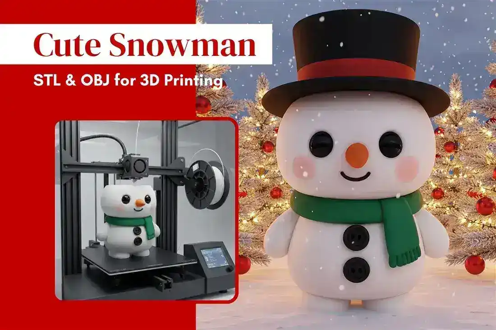
13
3D Model
Christmas & Winter · 3D Model
A round, friendly snowman that brings winter cheer without the cold. Set him on a bookshelf or windowsill where the soft curves read from across the room.
№ 14 · Print the nose in translucent red and thank yourself later.
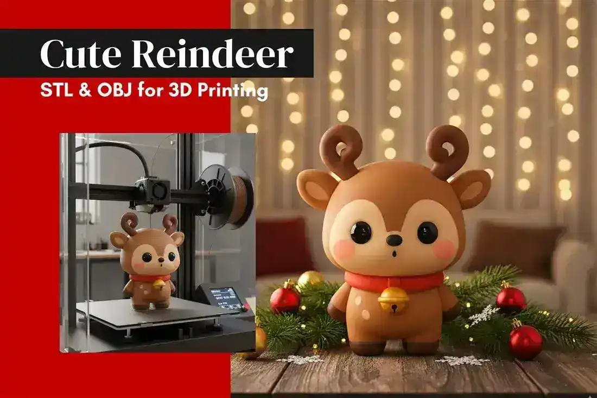
14
3D Model
Christmas & Winter · 3D Model
A chunky, happy reindeer with a glowing nose that steals the show on any shelf. Print the nose in translucent red for a subtle holiday wink.
№ 15 · Facets catch light like folded paper — prints in one go.
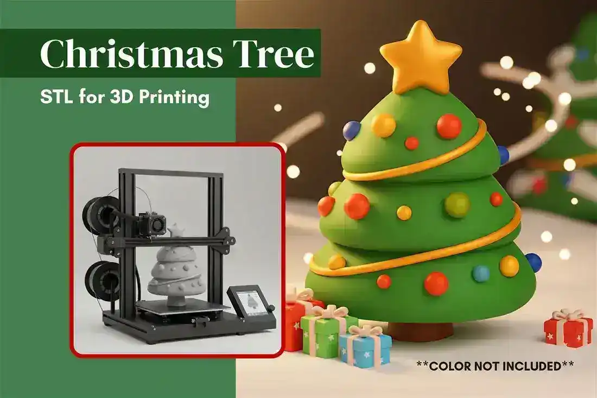
15
3D Model
Christmas & Winter · 3D Model
A crisp, faceted tree that nods to modern minimalist holiday styling. It prints clean in one go and suits a desk, entryway, or gift topper.
№ 16 · Baking afternoon, solved: three shapes, one tray.
16
3D Model
Christmas & Winter · 3D Model
Shape dough into trees, stars, and stockings for a baking afternoon with the kids. Food-safe prints make holiday cookie trays feel handmade and personal.
№ 17 · A storybook cottage that begs for a micro-LED inside.
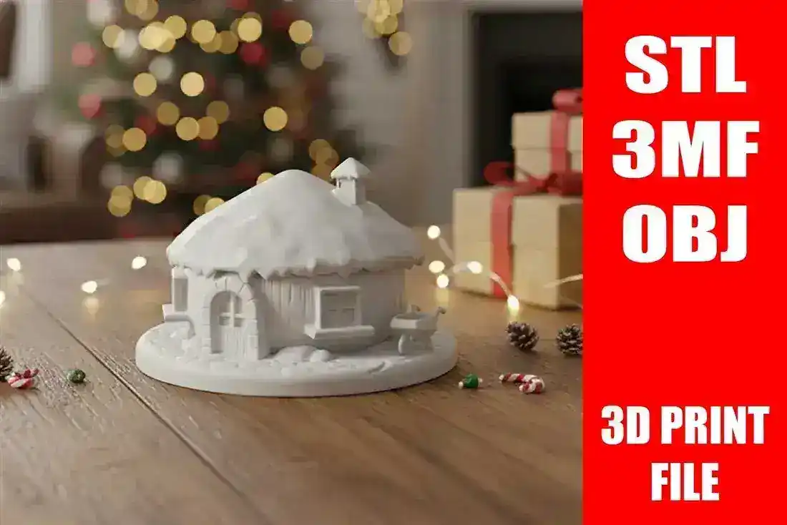
17
3D Model
Christmas & Winter · 3D Model
A cozy cottage with a snow-dusted roof that feels straight out of a storybook. Light it from within or leave it matte for a calm, collectible vignette.
Useful reading
Short, practical guides from the blog — the stuff worth knowing before your next print.